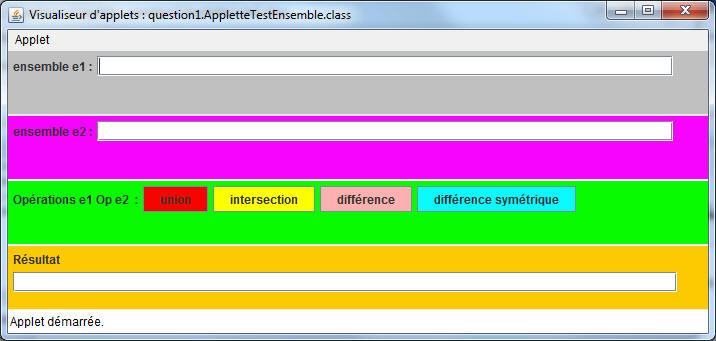

![[Image]](question1.jpg) .1) Compléter la classe "Ensemble",
nommée
.1) Compléter la classe "Ensemble",
nommée
Ensemble<T>
TP3
|
|
>java -jar ihm_q1.jar

.1) Compléter la classe "Ensemble",
nommée
Ensemble<T>
java.util.Vector<T>.
public boolean add(T t).2) Complétez la classe
de tests
unitaires de la classe Ensemble<T>
(pour la méthode add() )
POUR CE TP :
Dès qu'une ou deux assertions sont vérifiées, passez à la suite du TP.
Vous complèterez en travail personnel.
.3) Enrichissez la
classe Ensemble<T>
avec ces 4 opérations :
| 1) union ° | 2) intersection ° | 3) différence ° | 4) différence symétrique °° | |||
 |
Attention ! e et e1 ne doivent pas être modifiés.
Chaque opération retourne un nouvel ensemble, comme le suggère cette signature de la méthode "union"
public Ensemble<T> union( Ensemble<? extends T>e1) ...
une utilisation possible :
Ensemble e = ...
System.out.println(" union de e et de e1 : " + e.union(e1));
.4) Enrichissez la
classe de tests
unitaires demandée en 1.2
(chaque méthode doit avoir été testée au moins une fois)
.5) Vérifiez le bon
fonctionnement en complétant puis en utilisant l'interface nommée
IHMTestEnsemble
Soumettez cette question à l'évaluation Jnews.
![[Image]](question2.jpg) .1) Les listes et
dictionnaires
.1) Les listes et
dictionnaires
Le texte de la fenêtre de l'applette ci-dessous est une liste constituée de mots extraits du chapitre 2 de CoreJava2 consacré au "LinkedList" (les mots sont rassemblés dans une constante de type "String", nommée CHAPITRE2 dans la classe Chapitre2CoreJava2).
L'objectif est de pouvoir faire différents traitements sur cette liste de mots.Complétez la classe Chapitre2CoreJava2 en développant ces deux méthodes de classe :
public static List<String>
listeDesMots() public static
Map<String,Integer> occurrencesDesMots( List<String> liste )
.2)
ATTENTION le retrait d'un élément qui a déjà été présent dans la table retourne un nombre d'occurrences égal à zéro.
Demander le nombre d'occurrences d'un élément qui n'a jamais été présent dans la liste initiale doit retourner ?
AIDE : Croissant et Décroissant ne sont pas des boutons ; quel listener leur faut-il ?
Recopiez dans JPanelListe2 les deux méthodes d'JPanelListe complétées à la question 2.2, puis ...
.3) Complétez
maintenant, la classe JPanelListe2 afin d'implanter la possibilité d'annuler les actions de modification du
texte comme le retrait ou le tri sur la liste.
Aide au comportement attendu, une
interface graphique est disponible depuis votre répertoire
Soumettez cette question à l'évaluation Jnews.
![[Image]](question3.jpg) .1) Le pattern
Fabrique/Factory
.1) Le pattern
Fabrique/Factory
Selon la bibliographie habituelle,
l'objectif
du Pattern Factory est de définir une interface pour la
création d'un objet,
en laissant aux classes implémentant cette interface le choix de la
classe à instancier pour cet objet.
Interface Factory<T>, l'implémentation de la méthode create est laissée aux "clients"
package question3;
public interface Factory<T>{
public T create();
}exemple : TextFactory
public class TextFactory1 implements Factory<TextComponent>{
public TextComponent create(){
return new TextArea(100,50);
}
}
public class TextFactory2 implements Factory<TextComponent>{
public TextComponent create(){
return new TextField(40);
}
}Un usage :public void utilisation( Factoryfabrique ){
TextComponent tc = fabrique.create();
tc.setText( "essai" );
}
utilisation( new TextFactory1() );
utilisation( new TextFactory2() );Proposez les fabriques d'ensembles HashSetFactory, (en utilisant la classe concrète java.util.HashSet) et TreeSetFactory, (en utilisant la classe concrète java.util.TreeSet).
.2) Complétez la classe
de Tests unitaires
Soumettez cette question à l'évaluation Jnews.